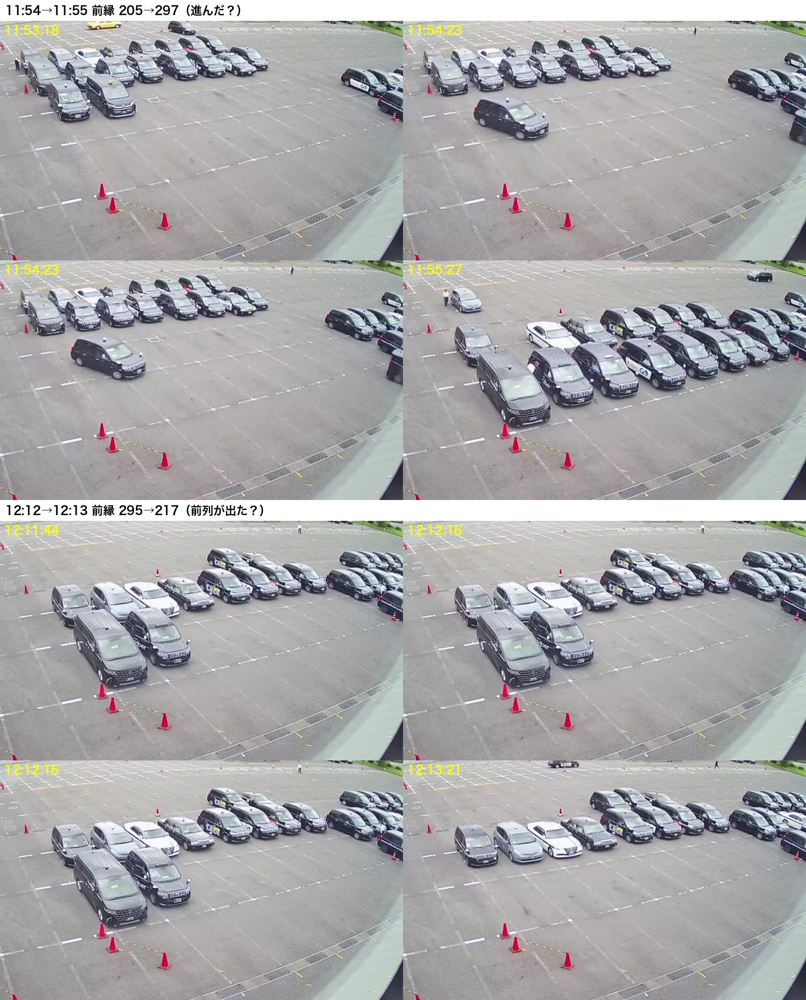
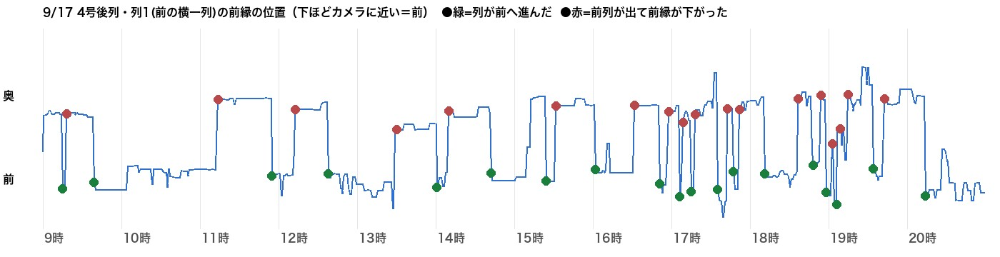
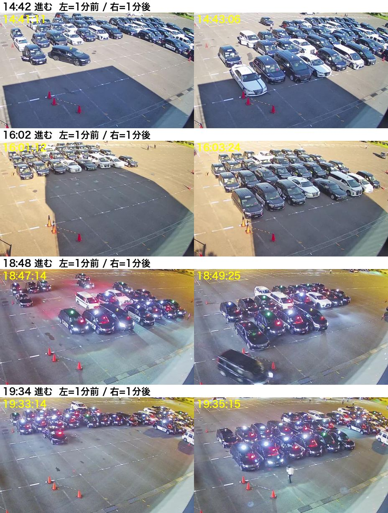
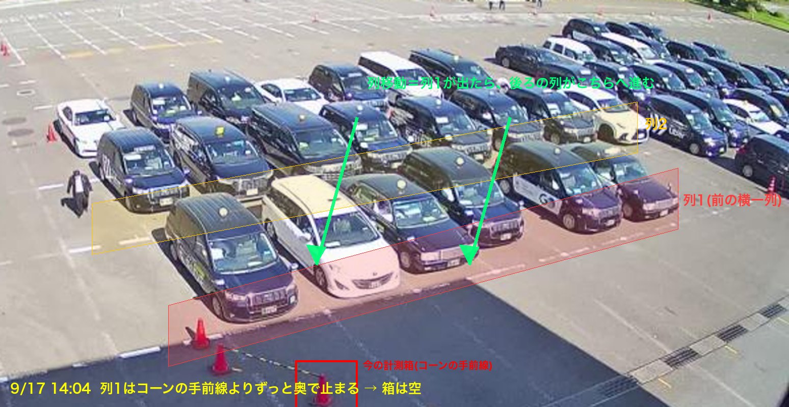

4号の列移動を画像で追った結果（2026-09-18）
定義＝「列（横一列）が前へ進む」。Mac mini の画像 3日分（各12時間）を1分おきに追い、列1の前縁の位置から「進んだ回数」を数えた。
① 実際に起きていること（9/17 11:54→11:55）

上4枚：11:53〜11:55。11:54→11:55 の1分で塊ごと前へ進む＝列移動。下4枚：12:12→12:13、前列（2台）が出て前縁が奥へ下がる。
② 1日の動き（9/17 9〜21時）

列1の前縁の位置。下＝前（カメラ側）。●赤＝前列が出て下がる、●緑＝塊が前へ進む。きれいな階段になっている。
緑（進んだ）＝ 9/17: 19回、9/16: 21回、9/13: 20回（いずれも9〜21時）
③ 目で確かめた

検出した「進む」4件（14:42 / 16:02 / 18:48 / 19:34）の1分前と1分後。4件とも塊が前へ進んでいる。①の2件と合わせて 6/6。
④ 今の記録との比べ
| 日 | 今の記録（コーンの箱） | 画像で追った「進んだ」回数(9-21時) |
|---|---|---|
| 9/13 | 23 | 20 |
| 9/16 | 9 | 21 |
| 9/17 | 3 | 19 |
今の箱は、塊がコーンまで伸びた日（9/13）だけ当たり、ふつうの日は列1が箱まで来ないので数えられない。追い方を「箱1つ」から「列1の前縁の位置」に変えると、日によらず数えられる。
⑤ どう測ったか（1枚で）

- 車の向きに沿った奥行き線を7本引き、各線で「前から見て最初に車がある位置」を取る → その中央値＝列1の前縁。
- 前縁が奥から前へ 一気に（3分以内に）動いたら「進んだ」1回。5分以内の二重検出は1回にまとめる。
- 側溝の格子・コーン・白線など動かないものは、1日の最小エッジを引いて無視。
まだ確かめていないこと：深夜（21時〜朝）。18〜20時は2件目視OK。手前カメラの先頭4台は6/05の指示どおり使わない。
⑥ あなたが決めること
A（おすすめ）：4号の「列移動」の元をこの追い方に切り替える（Mac mini の movement-shift-tick に列1前縁の追跡を足し、advance-count の 4号をそこから出す）。切替前に1週間ぶんの画像で回して深夜も目視する。
B：まず並走だけ（今の箱は残し、新しい追い方を別ログに1週間貯めて比べてから決める）。
C：やらない（今のまま）。